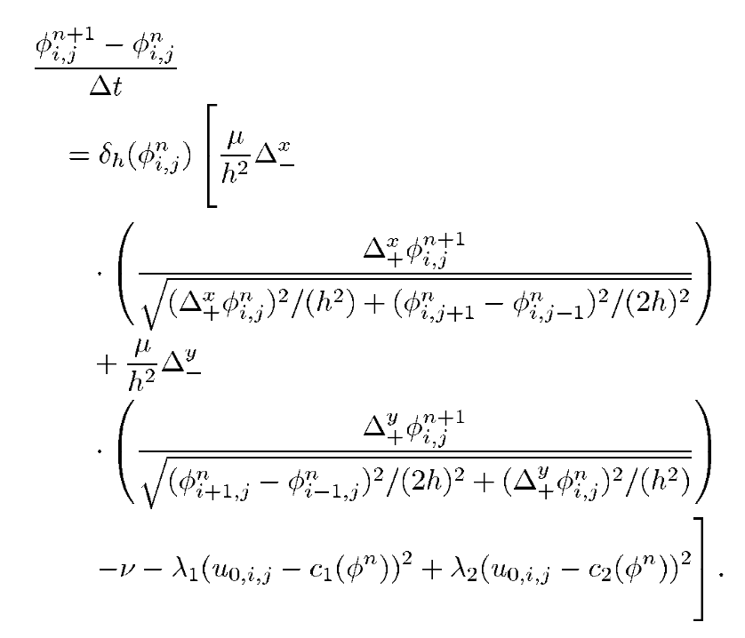

논문읽기 : Chan-Vese Algorithm
CS 논문읽기라고 생각하고 연 cs-adventure 카테고리인데 의외로 처음이 수치해석? 을 쓰는 최적화 관련이 되었네요.
Introduction
이번에 읽은 논문은 Active Contours Without Edges 라는, 2001년의 논문입니다. 2001년 IEEE Transactions on Image Processing, Vol.10, No.2 에 발표된 논문으로, 이 분야 - image processing - 에서는 엄청나게 중요한 논문으로, 현재까지 1만 3천 회 가량 인용되었습니다.
목표는 어떤 이미지가 주어졌을 때, 이 이미지의 외곽선 “Contour” 를 따는 것입니다. 특히, 여기서는 segmentation이라고 해서 그림의 픽셀을 몇개의 클래스로 구분하는 문제를 해결하는 것으로 보고 있습니다. 예를 들어, 배경 앞에 사람이 서 있다면, 사람과 배경을 구분하는 문제를 classification이라고 할 수 있겠습니다. 꽤 오래 전 (저널 발표일 기준 2001) 논문이므로, 본격적인 Deep Learning의 시대가 오기 전의 방법론을 볼 수 있었습니다.
먼저, 용어를 간단히 정의합니다. Segmentation과 Contour detection은 원래 약간 다른 문제지만, 여기서는 Segmentation의 방법으로 Level set (등고선) 의 Contour를 따는 방법을 생각하기로 합니다. 이를 위해, 예를 들어 어떤 grayscale 이미지가 주어지면, 이 선을 대충 색이 진한 쪽과 흐린 쪽으로 나누기 위해 진한 점들이 이루는 Contour를 찾고자 한다고 이해하면 되겠습니다.
Key Ideas
Energy functional
이 문제에서는, Segmentation 문제를 Functional Optimization의 문제로 환원합니다. 여기서 Functional이란, 정의역이 함수의 집합인 함수를 말합니다.
특히, 우리는 결과물의 외곽선이 Smooth하기를 원하므로, $X$에서 Lipschitz Continuous 한 함수의 집합 $\mathcal{L}$ 에서 $\R$로 가는 함수열을 생각할 것입니다. 여기서 Lipschitz 연속이란 연속성보다 더 강한 개념으로, 점 $x, y$ 와 어떤 상수 $K$에 대해 $\norm{f(x) - f(y)} \leq K \norm{x - y}$ 를 만족하는 함수들을 의미합니다.
함수의 Level set에 대해 논의하기 위해, 우리는 함수 $\phi \in \mathcal{L}$ 에 대해, $\phi = 0$ 인 점들을 이은 곡선을 $C$라고 정의합니다. 또한, $\phi(x) > 0$ 인 공간을 $A$, $\phi(x) < 0$ 인 공간을 $B$라고 쓰겠습니다. 마지막으로, 원래의 이미지 픽셀값을 $u_0(x, y)$ 함수로 나타냅니다.
이제, 다음과 같은 Functional들을 정의합니다.
- $Len(C)$ : 곡선의 길이. 곡선의 길이가 길면 $\phi$ 가 덜 smooth하기 때문에 (해석학적인 term이라기보다는, 기하적인 smooth함), 매끄러운 곡선을 그리도록 페널티를 통해 incentivise 합니다.
- $Area(A)$ : $\phi(x) > 0$ 인 부분의 넓이. 길이와 기본적인 의미는 같습니다.
- $\int_{A} \abs{u_0(x, y) - c_1}^2 \dd{x}\dd{y}$ : 어떤 실수값 $c_1$ 을 잡아서, $\phi$ 안쪽에서 $u_0$ 의 평균을 나타내고 싶습니다. 이때 이 평균값이 가급적 정확하기를 바란다는 의미입니다. 일종의, 영역 안에서의 intensity의 분산으로 생각하면 됩니다. 가급적 영역을 잘 잡아서 밝기의 분산이 작게 자른다는 의미가 되겠습니다.
- $\int_{B} \abs{u_0(x, y) - c_2}^2 \dd{x}\dd{y}$ : $\phi$ 바깥쪽에서도 똑같은 작업을 합니다.
직관적으로, 저 네 값 모두 작았으면 좋겠다는것을 알 수 있습니다. 앞 두개가 작으려면 함수가 대충 곡선으로 쭉 매끄럽게 이어져야 하고, 뒤 두개가 작으려면 그 안쪽과 바깥쪽에 어떤 intensity 값을 잡아서 그 값에 가깝게 잘려야 합니다.
우리는 저 네 Functional의 선형결합을 “Energy Functional” 이라고 부르기로 하고, 저 값을 minimize하는 $c_1, c_2, \phi$ 를 찾는 것을 목표로 합니다.
Integral formulation
그러나, 저 식은 저대로는 상당히 계산하기가 어렵습니다. 좀더 계산을 잘 하기 위해, 식을 살짝 조절해 봅시다. 이를 위해, 헤비사이드 함수 $H$를 도입합니다. $H$는 $x \geq 0$ 일 때 1, $x < 0$ 일 때 0인 함수입니다. 이를 도입하면 $H(\phi(x, y)) = 1$ iff $\phi(x, y) \geq 0$ 가 성립합니다.
- Length : 길이는 스토크스 정리와 헤비사이드 함수의 정의를 이용하면, 아래와 같이 쓸 수 있습니다.
\(L(\phi) = Len(C) = \int_{\R^2} \abs{\nabla H(\phi(x, y))} \dd{x}\dd{y}\)
당연히 일반적으로 $H(\phi(x, y))$ 는 미분이 불가능하지만, 우리는 Heaviside의 도함수를 Dirac-delta로 쓰고 있으므로 (in distribution function sense) 적분은 잘 됩니다. 1
나머지 식들과 적분하는 변수 등을 맞춰주기 위해, 이 식을 조금 바꾸어 아래와 같이 씁니다. \(L(\phi) = Len(C) = \int_{\R^2} \delta(\phi(x, y))\abs{\nabla \phi(x, y)} \dd{x}\dd{y}\) - Area : 간단한 다변수 적분입니다. \(S(\phi) = Area(A) = \int_{\R^2} H(\phi(x, y)) \dd{x}\dd{y}\)
- 역시 간단한 두 개의 다변수 적분식을 쓸 수 있습니다. \(F_i(\phi) = \int_{\R^2} \abs{u_0(x, y) - c_1}^2 H(\phi(x, y))\dd{x}\dd{y}\) \(F_o(\phi) = \int_{\R^2} \abs{u_0(x, y) - c_2}^2 (1 - H(\phi(x, y)))\dd{x}\dd{y}\)
하나 관찰할 수 있는 것은, $c_1$과 $c_2$는 $\phi$를 고정하고 최적화할 수 있다는 점입니다. 구체적으로, 첫번째 식을 다시
\(\int_{A} \abs{u_0(x, y) - c_1}^2 \dd{x}\dd{y}\) 이렇게 돌려놓고 보면, $c_1$은 자명하게 $u_0$의 $A$에서의 ‘평균’ 이 되어야 합니다. (적분을 통해 함수의 평균을 구하는 방법은 standard 하므로 생략) 따라서, 앞으로 $c_1, c_2$는 $\phi$로부터 간단한 적분을 통해 계산 가능하므로, 위 식을 $\phi$로만 최소화한다고 문제를 단순화하겠습니다.
또한, 실제 알고리즘은 1, 2, 3에 각각 적당한 상수를 붙여서 계산합니다. 특히, (3) 의 $F_i$ 와 $F_o$에 다른 상수를 붙여서 계산하는데, 실제로는 원본 논문의 저자들도 상수를 대충 잡았고, 이 상수를 어떻게 잡아야 하는지에 대해서는 별로 논증이 없었으므로 저는 여기서 (1) * $\mu$ + (2) * $\nu$ + (3) * $\lambda$ 로 놓고 계산하겠습니다. 외곽선이 매끄러운 것이 중요하면 $\mu, \nu$ 를 높게 잡고, 색의 정확도가 중요하면 $\lambda$를 높게 잡으면 됩니다.
Regularization & Euler-Lagrange
이후의 연산에서 가장 큰 문제 중 하나는, $H$ 와 $\delta$는 미분이 불가능한 함수라는 문제가 있습니다. 이 문제를 해결하기 위해, 우리는 Regularization이라는 방법을 적용합니다.
Regularization은 전혀 어렵지 않은데, $H$ 대신 $\epsilon$ 이라는 factor에 dependent한, 그리고 $H_\epsilon \to H$ as $\epsilon \to 0$ 함수 $H_\epsilon$ 으로 대체하고, 그 도함수를 $\delta_\epsilon$ 으로 쓰면 됩니다. 본 논문에서는 다음의 $H_\epsilon$ 을 제시하고 있습니다.
\(H_\epsilon(z) = \frac{1}{2} \left(1 + \frac{2}{\pi} \arctan\left(\frac{z}{\epsilon}\right)\right)\)
이 식과 그 도함수 $\delta_\epsilon$ 을 이용, 모든 $H$ 와 $\delta$를 대체하면 됩니다.
이제, 여기까지 오면서 우리가 최종적으로 무엇을 최소화하는지 보겠습니다. 여기서부터는 $F_i, F_o$ 등도 모두 위 식에 따라 relaxation 된 것으로 읽어야 합니다.
\(\int_{\R^2} \mu L(\phi) + \nu S(\phi) + \lambda(F_i(\phi) + F_o(\phi)) \dd{x}\dd{y}\)
이 식을 최소화하는 함수 $\phi$를 찾는 대표적인 방법은 변분법 입니다. 변분법으로 끔찍한 계산을 통해 오일러-라그랑주 방정식을 유도하면 2 3, 아래와 같은 편미분 방정식을 얻습니다.
\(\delta_\epsilon \left(\mu\nabla\cdot\left(\frac{\nabla \phi}{\abs{\nabla \phi}}\right) - \nu - \lambda(u_0 - c_1)^2 + \lambda(u_0 - c_2)^2\right) = 0 \tag{PDE}\)
Partial Differential Equation
우리는 이런 편미분방정식은 풀 방법이 없기 때문에, 마지막으로 수치해석을 적용합니다. 구체적으로, Finite Differnce method를 이용해야 합니다.
편미분방정식을 iterative 하게 풀기 위해, evolving 하는 해 $\phi$ 를 생각합니다. 이런 방법을 쓰는 이유는 $c_1$ 과 $c_2$를 $\phi$로부터 계산해야 해서 위 식을 계산할 수 없으므로, 다음과 같은 알고리즘을 돌리겠다는 의미입니다.
- $\phi_0$ 을 정합니다.
- $c_1, c_2$ 를 $\phi_n$ 으로부터 계산합니다.
- “PDE” 를 한번 풀어서 $\phi_{n+1}$ 을 계산합니다.
- $\phi_{n+1}$ 이 $\phi_n$ 과 많이 다르다면, (2) 로 돌아가서 반복합니다.
Finite Difference method는 별로 어렵지 않은데, $\Delta_{-}^{x}$ 같은 식으로 $x, y$ 방향 $+, -$ 로 네개의 time differnece를 정의하고 여러 공식들을 적용하기만 하면 됩니다. 편미방이 복잡하게 생겼지만 각 term은 그렇게 어렵지 않습니다.
먼저, $\nu - \lambda(u_0 - c_1)^2 + \lambda(u_0 - c_2)^2$ 부분은 자명합니다. ($c_1, c_2$ 도 $\phi_n$ 으로부터 구했으므로) Divergence 부분이 문제인데, 그 부분은 이미 과거의 선행 연구 논문 (링크) 에 의해 어떻게 해야 하는지 잘 알려져 있다고 합니다. 구체적으로, 충분히 작은 $\Delta t$를 잡아서 이렇게 쓰면 됩니다.

이제 수치해석 문제도 해결되었고, 위 식을 그냥 열심히 계산하면 됩니다.
Reinitialization
Level Set을 구하고자 Dirac delta 같은 함수들을 사용할 때, re-initialization이라는 과정을 거치지 않으면 level set이 지나치게 flat해지는 경향성이 있다고 합니다. 그 이유는 우리가 정상적인 $\delta$ 가 아닌 $\delta_\epsilon$ 같은 비슷한 함수들로 넘어가서 생긴 문제인데, 이를 해결하기 위해 $\phi$를 매번 수정해줄 수 있습니다. 논문에서 저자들은 ‘반드시 필요하지 않다’ 고 쓰고 있고, 실제로도 이 알고리즘에서는 Reinitialize를 하지 않아도 결과가 어떨때는 잘 나오는 것 같습니다만, 추가하고 싶다면 다음의 Evolution equation을 풀면 됩니다. \(\pdv{\psi}{t} = sign(\phi(x, y, t))(1 - \abs{\nabla \psi})\) 여기서 $\phi(x, y, t)$ 는, 앞서 $\phi_n$ 을 실제로는 $t = n\Delta t$에서의 $\phi(x, y, t)$ 값으로 보고 있기 때문에 필요한 지점에서는 계산할 수 있습니다. 우리는 어차피 이 식도 수치해석으로 풀 것이므로 $\phi(x, y, t)$ 의 값은 해석적으로 구할 필요 없습니다.
이 테크닉에 관해서는 다른 논문을 통해 더 알게 되면 보충해 볼 생각입니다. 아직은 실제 예시가 없어서인지 왜 이게 필요한지, 어떤 의미인지 잘 와닿지 않네요.
Conclusion
이 알고리즘은 Noisy image에서도 생각보다 훌륭한 성능을 보여주고, vector-valued (= 컬러 이미지) 같은 확장도 그렇게 어렵지 않습니다. 특히, 이런 식의 Energy Functional을 잘 정의하기에 따라서 범용성이 굉장히 높고 원하는 Feature가 있다면 추가로 embed 할 수도 있어서 확장성도 높습니다. 특히, 원본 논문에서는 curvature 같은 정보들을 추가로 이용하는 케이스들도 제시되고 있습니다.
Thoughts
- 위 알고리즘에서는 Parameter 가 상당히 중요해 보입니다. $\mu, \nu, \lambda$ 의 어떤 조합이 좋은 결과를 내는지에 대해서는 원본 논문에서는 별로 Discuss하지 않았는데, 실험적으로 확인해야 하는 걸까요? $\mu, \nu$ 는 어떻게 실험적으로 검증할 수 있어 보이는데, $\lambda$는 좀 오바인것 같습니다. 검색을 좀 해보니, 다른 논문 몇편에서 이미지의 어떤 computable한 성질들로부터 parameter를 자동으로 튜닝하는 논문들이 있었습니다.
- Functional Optimization은 일반적인 optimization의 방법론들과는 좀 다르다보니 어렵습니다. 듣기로는 Banach space위에서의 Lagrange Multiplier같은 해괴한게 있다고 합니다. Functional도 결국 Banach space나 Hilbert Space 같은 좋은 공간 위에서 어떤 함수를 최적화하는 거니까, 일반적인 최적화와 비슷한 아이디어들이 있는 걸까요?
-
해석개론을 배우고 나서부터 디랙-델타를 적분에 활용하는게 오히려 정말 이해가 안 갔었는데, 이 개념은 Measure, Distribution function 등 실해석학 및 그 이상의 해석학을 배우면 다시 make sense 합니다. 잠시 공학수학의 관점으로 돌아가서 이 식을 받아들이기로 합니다. 어차피, 이 적분을 실제로 계산할 것은 아니니까요. ↩
-
변분법과 오일러-라그랑주에 관한 내용은 미적분학 II에서 정말 초보적으로 배운 이후로 처음이라서, 거의 다 까먹었던 내용을 다시 보고 추가로 이것저것 더 공부해야 했습니다. 저보다 이런걸 훨씬 많이 써먹는 UNIST 기계공학과(+물리학 부전)의 지인에게 급히 오일러-라그랑주 방정식에 대해 배웠습니다. ↩
-
바로 위에서 언급된 지인이 던져준 고전역학 강의노트(제가 이런걸 보게 될줄은 몰랐네요…) 를 다시 보면서, 식을 처음부터 다 유도해 봤는데 진짜 정신이 아득합니다. ↩